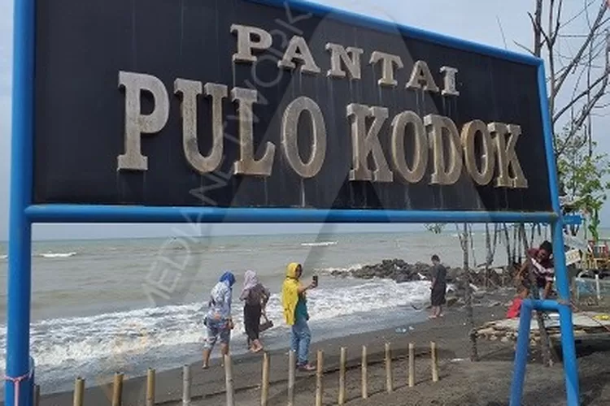
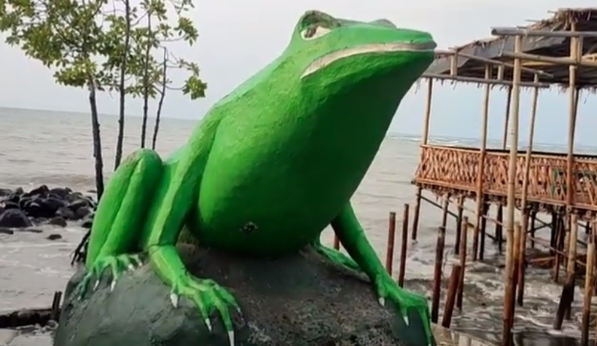

Tentang Pantai Pulau Kodok
Pantai Pulau Kodok memiliki pesona alami yang unik, cocok untuk menikmati pemandangan laut serta beragam aktivitas pantai. Nama "Pulau Kodok" berasal dari bentuk batuan di sekitar pantai yang menyerupai kodok, memberikan karakteristik yang khas dan menjadi daya tarik bagi pengunjung.
Informasi Pantai Pulau Kodok
| Fasilitas | Deskripsi |
|---|---|
| Penginapan | Nikmati makanan lokal khas Tegal dengan berbagai pilihan menu laut yang segar. |
| Sewa Perahu | Pengunjung dapat menyewa perahu untuk berkeliling dan menikmati keindahan laut di sekitar pantai. |
| Area Bersantai dan Spot foto | Area ini dilengkapi dengan gazebo dan spot foto Instagrammable yang menarik, ideal untuk mengabadikan momen indah di pantai. |
Galeri

